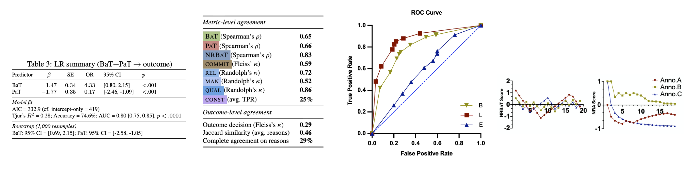
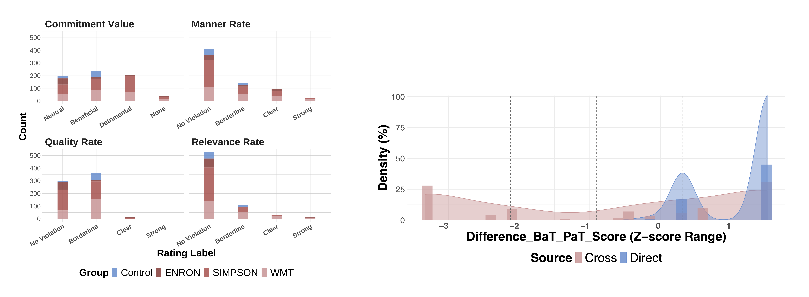

Abstract
Language is often used strategically, particularly in high-stakes, adversarial settings, yet most work on pragmatics and LLMs centers on cooperative settings. This leaves a gap in the systematic understanding of strategic communication in adversarial settings. To address this, we introduce SDA (Strategic Dialogue Assessment), a framework grounded in Gricean and game-theoretic pragmatics to assess strategic use of language. It adapts the ME Game jury function to make it empirically estimable for analyzing dialogue. Our approach incorporates two key adaptations: a commitment-based taxonomy of discourse moves, which provides a finer-grained account of strategic effects, and the use of estimable proxies grounded in Gricean maxims to operationalize abstract constructs such as credibility. Together, these adaptations build on discourse theory by treating discourse as the strategic management of commitments, enabling systematic evaluation of how conversational moves advance or undermine discourse goals. We further derive three interpretable metrics—Benefit at Turn (BAT), Penalty at Turn (PAT), and Normalized Relative Benefit at Turn (NRBAT)—to quantify the perceived strategic effects of discourse moves. We also present CPD (the Crooked Path Dataset), an annotated dataset of real courtroom cross-examinations, to demonstrate the framework's effectiveness. Using these tools, we evaluate a range of LLMs and show that LLMs generally exhibit limited pragmatic understanding of strategic language. While model size shows an increase in performance on our metrics, reasoning ability does not help and largely hurts, introducing overcomplication and internal confusion.
CPD: A dataset of real courtroom cross-examinations
To study the strategic use of language in adversarial settings, we collect a dataset of real courtroom cross-examinations from three prominent U.S. trials: the West Memphis Three Trials (1994), the O.J. Simpson Trial (1995) and the Enron (Lay & Skilling) Trial (2006). In total, the cross-examinations in the three trials consist of 4452 turns, with 3325 of these being Q/A pairs. One sample turn is shown below:
SDA: Quantifying how strategic language is
We follow the traditions of Gricean pragmatics and game-theoretic pragmatics to quantify how or to what extent a discourse move contributes to the speaker's goal. We introduce Strategic Dialogue Assessment (SDA), heavily grounded in the jury function à la Asher et al. (2017) to score the strategic value of discourse moves. In our proposal, the strategic effects of the utterances are determined by what commitments a speaker makes, and whether those commitments are meaningful, i.e., interpretable w.r.t. the prosecutor's questions. Crucially, such meaningful commitments can carry different strategic values, depending both on their content and on how they are realized in discourse. Hence we define SDA as a scorer τ as such, for each turn i, τ assigns a score: τ(i) = Commitment(i) * Credibility(i) * Consistency(i); f is a function assigning values to commitments. Depending on the value, we derive three interpretable metrics: Benefit at Turn (BAT), Penalty at Turn (PAT), and Normalized Relative Benefit at Turn (NRBAT).
BaT and PaT are valid and meaningful metrics
To demonstrate that our theory-driven metrics are empirically meaningful and valid, we conducted human annotations on a subset of the CPD dataset (800 turns) to annotate the discourse properties that make up SDA. We conducted an outcome prediction task and show that our metrics are predictive of turn outcomes (leftmost table) for each annotator, meaning that the discourse properties do reflect how much a move contributes to the speaker's goal. We also found:
- There is reasonable human agreement (second table) when annotating our discourse properties compared to simply annotating outcomes.
- Our metrics reflect more objective components in decision making (third figure). We asked annotators to note the reasoning behind their decisions and found that our metrics are more predictive when the reasoning is more objective (e.g., logical arguments) compared to subjective reasoning (e.g., personal emotions).
- Our metrics are observed to be more consistent than purely outcome-based metrics, as shown in the fourth figure. When annotating outcomes, annotator C shows personal bias that is not shared with the other two annotators, but this bias is not observed in our metrics.
Cooperative vs. Non-cooperative Dialogues
We also use our metrics to study the difference between cooperative (i.e., direct examination) and non-cooperative (i.e., cross-examination) dialogues. We made the following observations:
- Control discourse (the blue bars) rarely involves detrimental commitments or violations of maxims, whereas non-cooperative discourse (the reddish bars) exhibits a higher frequency of both phenomena.
- Even within non-cooperative discourse, the occurrence of maxim violations is remarkably lower than that of maxim maintenance.
- Our metrics (i.e., BaT, and PaT), like the underlying local discourse properties, also distinguish cooperative from non-cooperative discourse (density plot on the right).
How well do LLMs understand strategic language?

We conduct evaluation on a range of cutting-edge LLMs on recognizing discourse properties and whether their strategic understanding correlates with humans. We also vary their model sizes and reasoning abilities to investigate the impact of model size and reasoning abilities on their strategic understanding. We found:
- Larger models (indicated by darker bars) consistently outperform their smaller counterparts (i.e., the lighter bars) on our BaT and PaT and in identifying commitment types.
- Models equipped with explicit reasoning mechanisms (i.e., the bars to the right of the dashed line) do not consistently improve performance and, in some cases, perform worse than their non-reasoning counterparts.
What model bahaviors possibly drive this malperformance?
To further investigate the potential reasons for the malperformance of LLMs, we conducted a qualitative analysis of the model's responses. We found that the model's responses are often characterized by (1) overcomplication and (2) internal confusion.
The prosecutor is asking whether the witness has ever been rejected as an expert in other courts. The response implies an affirmation, resulting in a detrimental commitment. While the model initially arrives at the correct judgment, it soon cycles through contradictory interpretations, ultimately settling on an incorrect assessment.
The prosecutor is asking whether the defendant has pled guilty, admitting to which will be clearly detrimental to the defense side. The model's reasoning introduces a contrast not present in the context and shows misrepresentation of world information and contradicts itself across turns.
BibTeX
@article{zheng2026strategic,
title={Strategic Dialogue Assessment: The Crooked Path to Innocence},
author={Zheng, Anshun Asher and Li, Junyi Jessy and Beaver, David I.},
journal={Dialogue \& Discourse},
volume={17},
number={1},
pages={1--53},
year={2026}
}